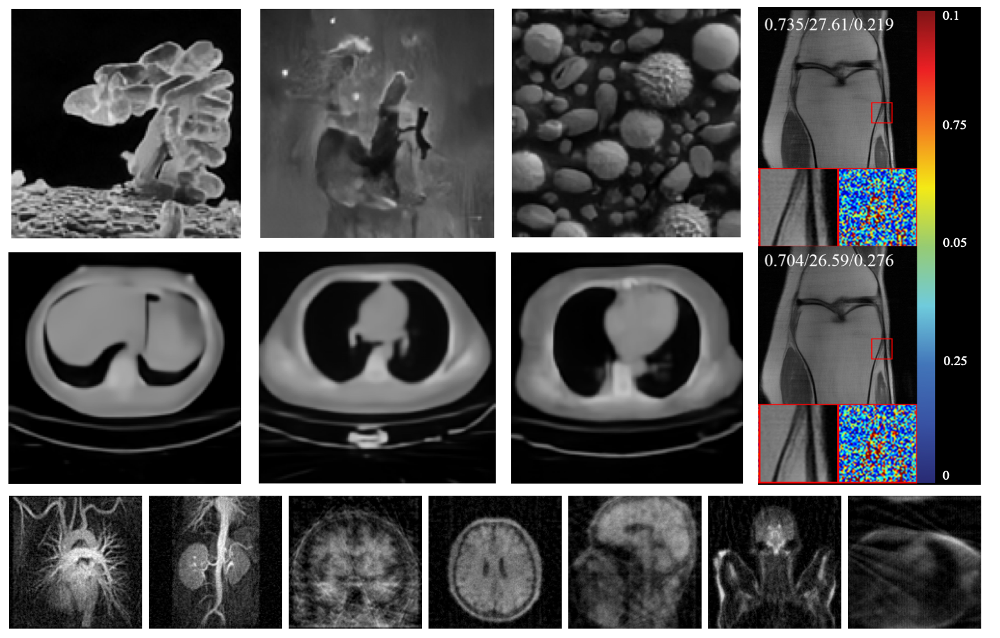

PhD Candidate in Deep Learning for Healthcare (Switzerland)

Principal Investigator
Project Summary
Positron Emission Tomography (PET) is vital for diagnosing diseases like cancer, heart conditions, and neurological disorders. However, conventional PET/CT imaging exposes patients to radiation from tracers and CT scans. This Swiss National Science Foundation (SNSF)-funded project aims to address these challenges by creating data-driven models to enable high-quality, low-dose PET imaging, reducing radiation risks and enhancing accessibility without compromising diagnostic accuracy. This position focus on three main streams:
1. Denoising of Low-Dose PET Images: Developing models to reduce noise and enhance the quality of PET scans acquired at lower radiation doses.
2. CT-Free Attenuation Correction: Developing AI-driven techniques for PET imaging that eliminate the need for CT scans, reducing radiation exposure and associated costs.
3. Robust Image Reconstruction and Synthesis: Using deep learning to create high-quality PET and CT images from low-dose PET data to support accurate, non-invasive diagnostics.
This work aims to advance personalized, non-invasive diagnostic techniques, making PET imaging safer and more accessible in clinical practice.
Position Details
We are seeking a highly motivated PhD candidate to join our team in Switzerland, bringing a strong background in deep learning and a passion for medical imaging. The PhD candidate will play a central role in developing robust and generalizable AI methods to address key technical challenges in PET image reconstruction.
Key responsibilities include:
• Design and implement advanced denoising models for low-dose PET images, focusing on noise reduction while preserving diagnostic detail.
• Develop and validate CT-free attenuation correction techniques that enhance PET imaging without additional radiation exposure.
• Collaborate closely with interdisciplinary teams at the University of Cambridge, Tsinghua University and Luzerner Kantonsspital to integrate AI solutions into clinical practice.
• Contribute to top scientific publications and outreach activities.
The project offers access to high-quality medical imaging datasets, a collaborative research environment, and guidance from academic and clinical experts in medical imaging and AI. The selected candidate will be employed for 48 months on the project.
Candidate Requirements
• Master’s degree in Computer Science, Biomedical Engineering, or a related discipline.
• Strong background in deep learning with practical experience in medical imaging applications preferred.
• Proficiency in Python and machine learning frameworks such as PyTorch or TensorFlow.
• Excellent communication skills in English and an ability to work within international, multidisciplinary teams.
• An eagerness to contribute to impactful research in the field of medical diagnostics.
Benefits
• Fully funded by the Swiss National Science Foundation (SNSF)
• The opportunity to work within an international research network and to contribute to the development of life-saving imaging technologies.
• Access to state-of-the-art datasets, resources, and facilities, fostering your growth in a supportive and collaborative environment.
Application Process
Please submit your CV, a cover letter detailing your research experience and motivation, and contact information for two academic references. Applications will be reviewed on a rolling basis until the position is filled.
Contact Information
For inquiries or to submit your application, please contact: Angelica Aviles-Rivero (aviles-rivero@tsinghua.edu.cn) and Javier Montoya (javier.montoya@hslu.ch)